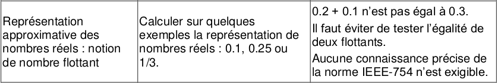
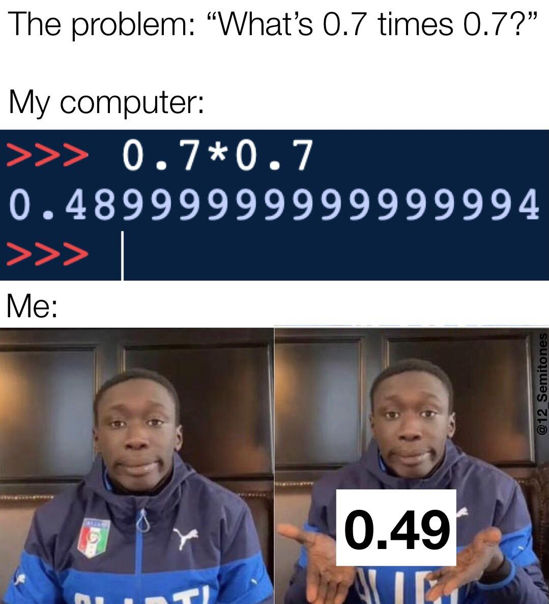

Chapitre 8 Codage des flottants⚓︎
 
Le principe est l'extension du système déjà rencontré pour les nombres entiers. La partie décimale (à droite de la virgule) correspondra aux puissances négatives de 2.
| ... | 8 | 4 | 2 | 1 | 0.5 | 0.25 | 0.125 | ... |
|---|---|---|---|---|---|---|---|---|
| ... | \(2^3\) | \(2^2\) | \(2^1\) | \(2^0\) | \(2^{-1}\) | \(2^{-2}\) | \(2^{-3}\) | ... |
| ... | 0 | 1 | 1 | 0, | 1 | 0 | 1 | ... |
Exemple : \(110,101_2=1 \times 2^2 + 1 \times2^1 +0 \times 2^0 + 1 \times 2^{-1} +0 \times 2^{-2}+1 \times 2^{-2} =4+2+0,5+0,125=6,625\)
1. Tentatives de conversion⚓︎
1.1 Théorème de décomposition en puissances de 2⚓︎
Tout commence bien, avec un résultat mathématique rassurant : tous les nombres réels peuvent s'écrire comme une somme de puissances de 2 (puissances positives et négatives).
Théorème
Pour tout réel \(x \in \mathbb{R}^+\), il existe \(p \in \mathbb{N}\) et \((a_p,a_{p-1},...,a_0,a_{-1},a_{-2},...)\) tels que \(x = \sum_{i=0}^pa_i2^i+\sum_{i=1}^{+\infty}a_{-i}2^{-i}\)
Écrire un nombre en binaire revient à calculer les coefficients \(a_k\) (ils sont égaux à 0 ou 1). Il y en a un nombre fini pour la partie entière, mais un nombre potentiellement infini pour la partie décimale.
1.2 Méthode de conversion⚓︎
Considérons le nombre \(3,6875\). Il se décompose en une partie entière (3) et une partie décimale (\(0,6875\)).
- partie entière : \(3=11_2\)
- partie décimale : la conversion de \(0,6875\) se fait en plusieurs étapes.
\(0,6875 \times 2 = \textbf{1},375\)
\(0,375 \times 2 = \textbf{0},75\)
\(0,75 \times 2 = \textbf{1},5\)
\(0,5 \times 2 = \textbf{1}\)
On prend ensuite le chiffre des unités de tous les nombres obtenus : 1011
Donc \(3,6875=11,1011_2\)
Exercice 1
Donner l'écriture binaire de 20,875.
- partie entière : \(20 = 10100_2\)
- partie décimale :
- \(0,875 \times 2 = \textbf{1},75\)
- \(0,75 \times 2 = \textbf{1},5\)
- \(0,5 \times 2 = \textbf{1}\)
Donc \(20,875=10100,111_2\)
Exercice 2
Donner l'écriture binaire de 0,2. En déduire que le nombre 0,2 n'admet pas d'écriture binaire finie.
- partie entière : \(0 = 0_2\)
- partie décimale :
- \(0,2 \times 2 = \textbf{0},4\)
- \(0,4 \times 2 = \textbf{0},8\)
- \(0,8 \times 2 = \textbf{1},6\)
- \(0,6 \times 2 = \textbf{1},2\)
- \(0,2 \times 2 = \textbf{0},4\)
- et cela continue...
Conclusion: Le nombre 0,2 n'admet pas d'écriture binaire finie.
Conclusion⚓︎
Certains nombres n'admettent pas une écriture binaire finie. Or la mémoire d'un ordinateur, quelqu'il soit, est toujours finie. Certains nombres ne peuvent donc pas être représentés correctement en machine : c'est une impossibilité théorique. Cela amène à des comportements étranges :
>>> 0.1 + 0.2
0.30000000000000004
Remarque : parmi les nombres décimaux à un chiffre après la virgule (0,1 0,2 0,3 ...) seul 0,5 admet une écriture binaire finie ! Tous les autres ont une représentation en machine qui n'en donne qu'une valeur approchée.
2. Conséquences : la difficile manipulation des flottants⚓︎
En python, les nombres non entiers sont du type float.
>>> type(0.1)
<class 'float'>
Ces flottants (traduction française) sont à manipuler avec une extrême précaution. Il faut garder en tête que les calculs sont potentiellement faux, du moins imprécis, lorsque des flottants interviennent.
>>> 0.5-0.2-0.2-0.1
-2.7755575615628914e-17
En 1991, durant la Guerre du Golfe, un missile anti-missile américain a raté sa cible de 500 mètres car son ordinateur interne émettait un signal toutes les 0.1 secondes. Au bout de 100 heures de fonctionnement, l'approximation du nombre flottant 0.1 a conduit à un décalage de 0,34 secondes, ce qui lui a fait rater sa cible. (source)
3. Comment faire des tests d'egalité sur les flottants ?⚓︎
Première réponse : ON N'EN FAIT PAS.
Si a et b sont deux flottants, le test classique
if a == b :
print("a et b sont égaux")
a de grandes chances d'échouer :
Le script
| 🐍 Script Python | |
|---|---|
1 2 3 4 5 6 | |
renverra
a et b sont différents
Si vraiment un test d'égalité est nécessaire, on ne va pas tester l'égalité entre a et b mais leur proximité, grâce à la valeur absolue de leur différence.
La fonction abs(a-b) renvoie un nombre positif égal à la distance entre a et b. Il faut alors décider d'un écart minimal e en dessous duquel on considèrera que a et b sont égaux.
Le script
a = 0.1
b = 0.3-0.2
e = 10**(-12)
if abs(a-b) < e :
print("a et b sont égaux")
else :
print("a et b sont différents")
renverra
a et b sont égaux
Exercice 3
On considère la fonction \(f(x)=x^3-6x+2\).
L'équation \(f(x)=1\) admet une solution unique dans l'intervalle \([0;1]\).
Trouver une valeur approchée de cette solution à \(10^{-5}\) près. On prendra e\(=0,001\).
def f(x):
return x**3 - 6 * x + 2
e = 10**(-3)
a = 0
while abs(f(a) - 1 ) > e :
a += 10**(-5)
print(a)